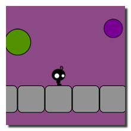

Tutorial
Page 8 of 11
Saving Games
When saving a game state for re-loading at a later time, the important thing to realise is that not everything needs to be saved. What do we mean? Well, let's look at the example "game" room that is in
this tutorial...

In the game room, we have a player, some blocks and some balls. Now, all these objects have the same built-in variables for speed, direction, image_speed, sprite_index etc... but do we need to save all that
information if we save the game? No, we do not.
Let's start with the player. What do we need to save for the player object? Well, really, the only important thing to save here is the player position because all the rest will be created automatically
when we create the player, and we don't want to save speed or direction of movement either as when the user "loads" the game, they won't want the player object to shoot off the screen.
Now what about the "wall" objects? Again, just like the player object, we only need to save their position as they do nothing. And the "balls"? The balls do need us to save slightly more information for them,
as they can be moving, have a different colour and size and also position, so we will save the x, y, image_xscale, image_blend, speed and direction of them to the file then.
With the exact details of what to save, let's now move on to the how to save!
Click on the Next button to go to the next page of the tutorial.